Versal ACAP CIPS および NoC (DDR) IP コアの設定¶
Versal™ ACAP CIPS IP コアを使用すると、ブート モード、ペリフェラル、クロック、インターフェイス、割り込みなどのプロセッシング システムおよび PMC ブロックを設定できます。
この章では、次のタスクを実行する方法について説明します。
CIPS IP コアを設定して、Versal ACAP 用の Vivado ® プロジェクトを作成し、適切なブート デバイスとペリフェラルを選択します。
Arm® Cortex™-A72 のオンチップ メモリ (OCM) 上で Hello World ソフトウェア アプリケーションを作成して実行します。
Arm Cortex-R5F の TCM (Tightly-coupled-memory) 上で Hello World ソフトウェア アプリケーションを作成して実行します。
NoC IP コアは、 DDR メモリ、およびシステム内のプロセッシング エンジン (スカラー型エンジン、適応型エンジン、AI エンジン) を通るデータパスの設定に役立ちます。
DDR をメモリとして使用して、Arm Cortex-A72 上で Hello World ソフトウェア アプリケーションを作成して実行します。
DDR をメモリとして使用して、Arm Cortex-R5F 上で Hello World ソフトウェア アプリケーションを作成して実行します。
前提条件¶
この章で説明する Hello World アプリケーションを作成して実行するには、Vitis™ 統合ソフトウェア プラットフォームをインストールする必要があります。インストールするには、『Vitis 統合ソフトウェア プラットフォームの資料: エンベデッド ソフトウェア開発』 (UG1400)を参照してください。
CIPS IP コアの設定¶
Versal ACAP システム デザインの作成には、適切なブート デバイスおよびペリフェラルを選択するように CIPS IP を設定する必要があります。まず、CIPS IP コアのペリフェラルと利用可能な MIO (Multiplexed I/O) の接続が要件を満たしていれば、PL コンポーネントは必要ありません。この章では、単純な CIPS IP コア ベースのデザインを作成する方法について説明します。
Versal ACAP を使用した新規エンベデッド プロジェクトの作成¶
この例では、Vivado Design Suite を起動し、エンベデッド プロセッシング システムのプロジェクトを最上位として作成します。
デザインの開始¶
Vivado Design Suite を起動します。
[Tcl Console] ウィンドウに次のコマンドを入力して、ES1 ボードをイネーブルにします。
enable_beta_deviceEnter キーを押します。
[Quick Start] セクションの [Create Project] をクリックし、New Project ウィザードを開きます。
ウィザードの各ページで次の表の情報に基づいて設定します。
表 1: システム プロパティ設定
| ウィザード ページ | システム プロパティ | 設定または使用するコマンド |
|---|---|---|
| Project Name | Project Name | edt_versal |
| Project Location | C:/edt | |
| Create Project Subdirectory | オン | |
| Project Type | 作成するプロジェクトのタイプを指定(RTL または合成済み EDIF にしてみます) | RTL Project |
| Do not specify sources at this time check box | オフのまま | |
| Project is an extensible Vitis platform checkbox | オフのまま | |
| ソースの追加 | この画面は変更しません。 | |
| Add Constraints | この画面は変更しません。 | |
| Default Part | 選択 | Boards |
| Display Name | Versal VMK180/VCK190 Evaluation Platform | |
| Project Summary | Project Summary | プロジェクト サマリを確認 |
[Finish] をクリックします。New Project ウィザードが閉じ、作成したプロジェクトが Vivado デザイン ツールで開きます。
注記: ボードを選択する際には、バージョン番号を確認してください。ES1 シリコンの場合、ボードのバージョンは 1.1 で、プロダクション シリコンの場合、ボードのバージョンは 2.0 です。ボード上のシリコンに基づいてバージョンを選択します。
エンベデッド プロセッサ プロジェクトの作成¶
エンベデッド プロセッサ プロジェクトを作成する手順は、次のとおりです。
Flow Navigator の [IP Integrator] → [Create Block Design] をクリックします。

[Create Block Design] ダイアログ ボックスが開きます。
[Create Block Design] ダイアログ ボックスで次のように選択します。
表 2: システム プロパティ設定
| ウィザード ページ | システム プロパティ | 設定または使用するコマンド |
|---|---|---|
| Create Block Design | Design name | edt_versal |
| Directory | <Local to Project> |
|
| Specify source set | Design Sources |
[OK] をクリックします。
[Diagram] ウィンドウがこのデザインが空であることを示すメッセージと共に表示されます。まずは、IP カタログから IP を追加します。
[Add IP]
 をクリックします。
をクリックします。検索ボックスに「CIPS」と入力して、[Control, Interfaces and Processing System] を見つけます。
[Control, Interface & Processing System IP] をダブルクリックして、ブロック デザインに追加します。次の図に示すように、[Diagram] ウィンドウに CIPS IP コアが表示されます。

Vivado Design Suite での Versal ACAP CIPS IP コアの管理¶
Versal™ ACAP のプロセッサ システムをデザインに追加したので、オプションを設定します。
[Diagram] ウィンドウで versal_cips_0 をダブルクリックします。
次の図に示すように、[Board] タブで [cips fixed io] を選択します。
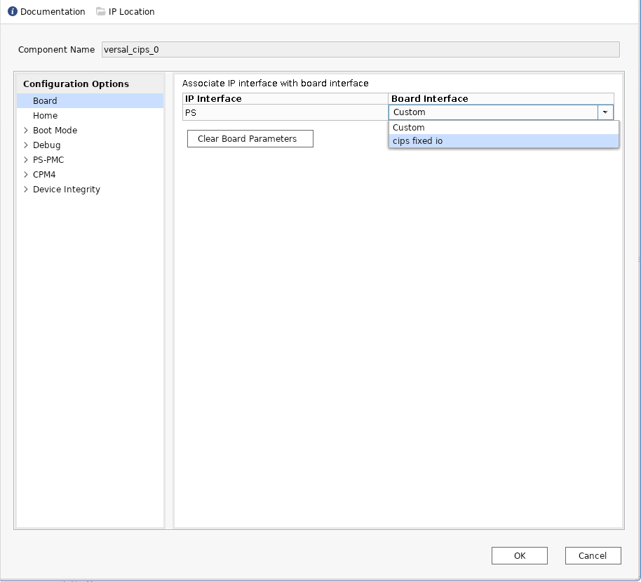
[OK] をクリックします。
デフォルトでは、CIPS にはイネーブルになった制御またはインターフェイスはありません。ボード プリセットを適用すると、MO ピンにボード接続された CIPS 上のペリフェラルが有効になります。
[Diagram] ウィンドウで versal_cips_0 をダブルクリックします。次の図に示す [Re-customize IP] ダイアログ ボックスが開きます。
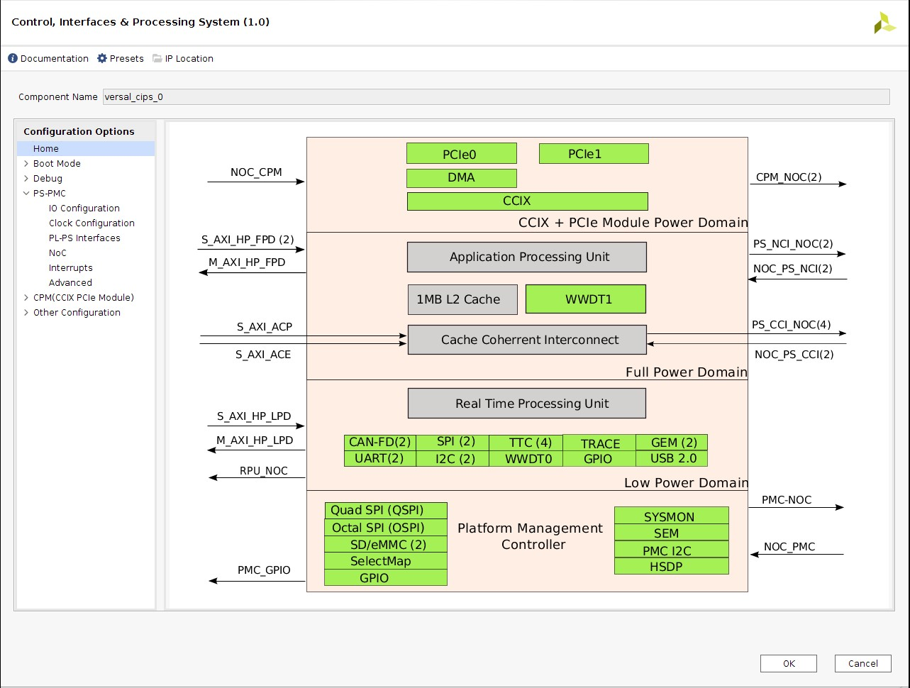
[PS-PMC] ドロップダウン リストを展開します。次の図に示すように [IO Configuration] をクリックします。[IO Configurations] ダイアログ ボックスが開きます。
I/O コンフィギュレーションでは、プロセッシング システム内のペリフェラルをイネーブルにし、関連する MIO のピン割り当てを選択できます。次の図のようにペリフェラルがコンフィギュレーションされます。
注記: ブロック オートメーションは明示的には実行されません。ボード インターフェイスが [Custom] から [cips fixed io] に変更されるとディスエーブルになります。

[OK] をクリックして CIPS の GUI を閉じます。
デザインの検証および出力の生成¶
デザインを検証し、出力ファイルを生成するには、次の手順を実行します。
[Diagram] ウィンドウの空白部分を右クリックして、[Validate Design] をクリックします。
または、F6 キーを押します。次の図のようなメッセージが表示されます。

[Block Design] 環境の [Sources] ウィンドウをクリックします。
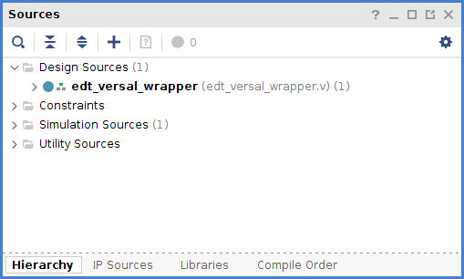
[Hierarchy] タブをクリックします。
[Design Sources] の下の [edt_versal] を右クリックし、[Create HDL Wrapper] をクリックします。
[Create HDL Wrapper] ダイアログ ボックスが開きます。このダイアログ ボックスを使用して、プロセッサ サブシステム用の HDL ラッパー ファイルを作成します。
ヒント: HDL ラッパーは、デザイン ツールに必要な最上位エンティティです。
[Let Vivado manage wrapper and auto-update] をオンにし、[OK] をクリックします。
[Block Design] の [Sources] ウィンドウで、[Design Sources] の [edt_versal_wrapper] を展開します。
edt_versal_i: edt_versal (edt_versal.bd) という最上位ブロックを右クリックし、[Generate Output Products] をクリックします。
次に示す [Generate Output Products] ダイアログ ボックスが開きます。

注記: Windows マシンで Vivado® Design Suite を実行している場合は、[Run Settings] の下にさまざまなオプションが表示されることがあります。その場合は、デフォルト設定で続行します。
[Generate] をクリックします。
この手順では、選択したソースに必要なすべての出力ファイルを作成します。たとえば、IP プロセッサ システムの制約を手動で作成する必要はありません。[Generate Output Products] を実行すると、Vivado ツールでプロセッサ サブシステム用の XDC ファイルが自動的に生成されます。
[Block Design] の [Sources] ウィンドウで、[IP Sources] タブをクリックします。次の図に示すように、生成した出力ファイルが表示されます。
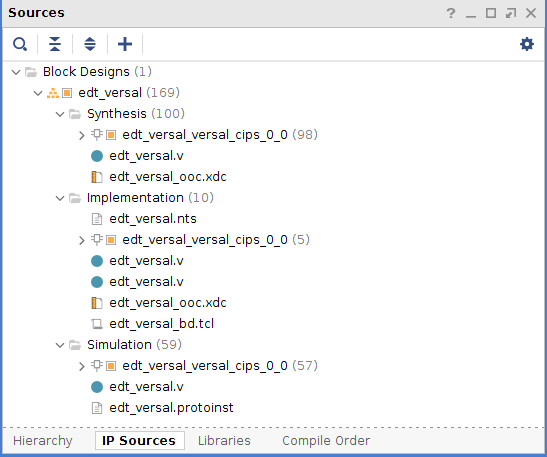
デバイス イメージの合成、インプリメント、生成¶
デザインのデバイス イメージを生成するには、次の手順を実行します。
Flow Navigator の [Program and Debug] をクリックし、[Generate Device Image] をクリックします。
[No Implementation Results Available] メニューが表示されます。[Yes] をクリックします。
[Launch Run] メニューが表示されます。[OK] をクリックします。
デバイス イメージの生成が完了すると、[Device Image Generation Completed] ダイアログ ボックスが開きます。
[Cancel] をクリックしてウィンドウを閉じます。
デバイス イメージを生成したら、ハードウェアをエクスポートします。
注記: 次の手順はオプションなので、省略して「ハードウェアのエクスポート」 セクションに進むこともできます。これらの手順を実行すると、デバイス イメージを生成する前に合成およびインプリメンテーションを実行するので、デバイス イメージ生成の詳細なフローがわかるようになります。デバイス イメージの生成フローを理解する必要がある場合は、次の手順を実行します。
Flow Navigator の [Synthesis] の [Run Synthesis] をクリックして、[OK] をクリックします。

合成の開始前にプロジェクトを保存するようメッセージが表示された場合は、[Save] をクリックします。
合成の実行中、ウィンドウの右上にステータス バーが表示されます。このステータス バーは、デザイン プロセスをとおして、さまざまな理由により表示されます。ステータス バーは、プロセスがバックグラウンドで実行されていることを示します。合成が完了すると、[Synthesis Completed] ダイアログ ボックスが開きます。
[Run Implementation] をクリックして [OK] をクリックします。
インプリメンテーションが完了すると、[Implementation Completed] ダイアログ ボックスが開きます。
[Generate Device Image] をクリックして [OK] をクリックします。
デバイス イメージの生成が完了すると、[Device Image Generation Completed] ダイアログ ボックスが開きます。
[Cancel] をクリックしてウィンドウを閉じます。
デバイス イメージを生成したら、ハードウェアをエクスポートします。
ハードウェアのエクスポート¶
[File] → [Export] → [Export Hardware] をクリックします。
[Export Hardware] ダイアログ ボックスが開きます。
[Include device image] を選択し、[Next] をクリックします。
エクスポートしたファイルの名前を入力し (またはデフォルトを使用し)、ディレクトリを選択します。[Next] をクリックします。
ハードウェア モジュールが既にエクスポートされている場合は、警告メッセージが表示されます。既存の XSA ファイルを上書きするかどうか尋ねるメッセージが表示されたら、[Yes] をクリックします。
[Finish] をクリックします。
ベアメタル Hello World アプリケーションの実行¶
この例では、Vitis ソフトウェア プラットフォームでのボード設定の管理、ケーブルの接続、システムからのボードへの接続、および OCM (オンチップ メモリ) 上の Arm Cortex-A72 および TCM (Tightly-coupled-memory) 上の Arm Cortex- R5F から Hello World ソフトウェア アプリケーションを実行する方法を説明します。
次の手順では、必要なケーブル接続をし、システムからボードを接続して、Vitis ソフトウェア プラットフォームを起動する方法を示します。
電源ケーブルをボードに接続します。
マイクロ USB ケーブルで Windows ホスト マシンとターゲット ボードの USB JTAG コネクタを接続します。このケーブルは、USB のシリアル転送に使用されます。
注記: SW1 スイッチが次の図に示すように JTAG ブート モードに設定されることを確認しください。
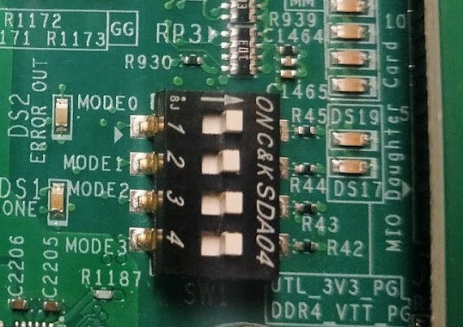
次の図に示すように、電源スイッチを使用して VMK180/VCK190 ボードに電源を投入します。
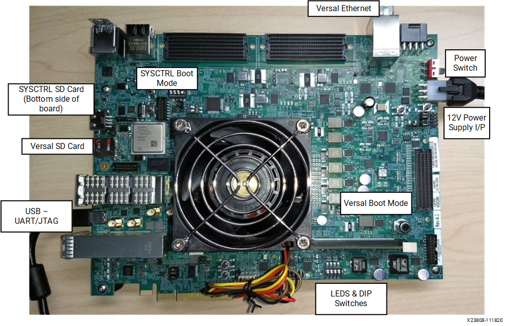
注記: Vitis ソフトウェア プラットフォームが既に起動している場合は、手順 6 へ進みます。
[Tools] → [Launch Vitis IDE from Vivado] をクリックして Vitis ソフトウェア プラットフォームを起動し、ワークスペース パス (この例の場合は、
C:\edt\edt_vck190) を指定します。または、デフォルトのワークスペースを使用して Vitis ソフトウェア プラットフォームを開き、後で [File] → [Switch Workspace] をクリックして正しいワークスペースに切り替えることもできます。
システムで割り当てられている COM ポートのシリアル通信ユーティリティを開きます。Vitis ソフトウェア プラットフォームではシリアル端末ユーティリティが提供されており、これをチュートリアルを通して使用します。[Window] → [Show View] → [Xilinx] → [Vitis Serial Terminal] をクリックしてこのユーティリティを開きます。
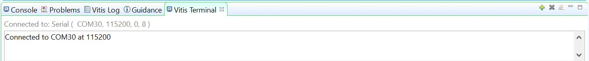
Vitis ターミナル コンテキストで [Connect to a serial port] ボタン をクリックして、シリアル コンフィギュレーションを設定し、接続します。
Windows デバイス マネージャーでポートの詳細を検証します。
UART-0 ターミナルは、Interface-0 の COM ポートに対応します。この例では、UART-0 ターミナルがデフォルトで設定されているため、COM ポートに対して Interface-0 のポートを選択します。次の図に、Versal ACAP プロセッシング システム用の標準的な設定を示します。

注記: Tera Term や Putty などの外部ターミナル シリアル ポート コンソールを使用できます。関連する COM ポート情報は、[コントロール パネル] の [デバイス マネージャー] メニューから確認できます。
OCM 上の Arm Cortex-A72 用の Hello World アプリケーションの作成¶
次は、OCM 上の Arm Cortex-A72 から Hello World アプリケーションを作成する手順を示しています。
[File] → [New] → [Application Project] をクリックします。Creating a New Application Project ウィザードが開きます。Vitis IDE を初めて起動した場合は、次の図に示す Welcome 画面で [Create Application Project] を選択できます。
注記: オプションで、[Skip welcome page next time] チェック ボックスをオンにすると、毎回 Welcome ページを表示しないようにすることもできます。
ウィザードの各ページで次の表の情報に基づいて設定を選択します。
表 3: システム プロパティ設定
| ウィザード ページ | システム プロパティ | 設定または使用するコマンド |
|---|---|---|
| Platform | Create a new platform from hardware (XSA) | [Browse] ボタンをクリックして XSA ファイルを追加 |
| Platform Name | vck190_platform | |
| Application Project Details | Application project name | helloworld_a72 |
| システム プロジェクトを選択 | +Create New | |
| System project name | helloworld _system | |
| Processor | psv_cortexa72_0 | |
| Domain | Select a domain | +Create New |
| Name | デフォルト名入力済み | |
| Display Name | デフォルト名入力済み | |
| Operating System | Standalone | |
| Processor | psv_cortexa72_0 | |
| <architecture> | 64-bit | |
| Templates | Available Templates | Hello World |
TheVitissoftwareplatformcreatestheboardsupportpackageforthePlatformproject(vck190_platform)andthesystemproject(helloworld_system)containinganapplicationprojectnamedhelloworld_a72undertheExplorerviewafterperformingtheabovesteps.vck190_platform を右クリックし、[Build Project] をクリックし。または、 をクリックすることもできます。
注記: [Project Explorer] ビューが表示されない場合は、左側のパネルの復元アイコン
 をクリックし、手順 3 を実行します。
をクリックし、手順 3 を実行します。
helloworld_a72 アプリケーション ソース コードの変更¶
[helloworld_a72] をダブルクリックし、[src] をダブルクリックして [helloworld.c] を選択します。
helloworld.cアプリケーションの ソース ファイルが開きます。print コマンドの引数を編集します。
print("Hello World from APU\n\r");print("Successfully ran Hello World application from APU\n\r");
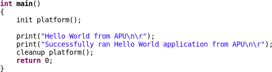
 をクリックしてプロジェクトをビルドします。
をクリックしてプロジェクトをビルドします。
プラットフォーム プロジェクトへの新規 RPU ドメインの追加¶
次は、TCM 上の Arm Cortex-R5F 用にベアメタル Hello World アプリケーションを作成する手順を示しています。アプリケーションは、ドメインにリンクする必要があります。アプリケーション プロジェクトを作成する前に、ターゲット ドメインのソフトウェア環境が使用可能かどうかを確認してください。使用可能でない場合は、次の手順を使用して必要なドメインをプラットフォームに追加します。
Vitis の [Explorer] ビューで
platform.sprファイルをダブルクリックします。この例では vck190_platform → platform.spr です。メイン ウィンドウで
 ボタンをクリックします。
ボタンをクリックします。Domain ウィザードの各ページで次の表の情報に基づいて設定を選択します。
表 4: 新しいドメイン設定
| ウィザード ページ | フィールド | 設定または使用するコマンド |
|---|---|---|
| Domain | Name | r5_domain |
| Display Name | autogenerated | |
| OS | standalone | |
| Processor | psv_cortexr5_0 | |
| [Supported Runtimes] | C/C++ | |
| <architecture> | 32-bit |
[OK] をクリックします。新しく生成された r5_domain が設定されます。
注記: この時点で、[Explorer] ビューのプラットフォームの横に Out of date を示すアイコンが表示されます。
アイコンをクリックしてプラットフォームをビルドします。[Project Explorer] ビューには、プラットフォーム プロジェクトで生成されたイメージ ファイルが表示されます。
Arm Cortex-R5F のスタンドアロン アプリケーション プロジェクトの作成¶
次の手順は、Arm Cortex-R5F から Hello World アプリケーションを作成する手順を示しています。
[File] → [New] → [Application Project] をクリックします。Creating a New Application Project ウィザードが開きます。Vitis IDE を初めて起動した場合は、Welcome 画面で [Create Application Project] を選択できます。
注記: オプションで、[Skip welcome page next time] チェック ボックスをオンにすると、毎回 Welcome ページを表示しないようにすることもできます。
ウィザードの各ページで次の表の情報に基づいて設定を選択します。
表 5: システム プロパティ設定
| ウィザード ページ | システム プロパティ | 設定または使用するコマンド |
|---|---|---|
| Platform | Select a platform from repository | Select vck190_platform |
| Application Project Details | Application project name | helloworld_r5 |
| Select a system project | helloworld_system | |
| System project name | helloworld _system | |
| Target processor | psv_cortexr5_0 | |
| Domain | Select a domain | r5_domain |
| Name | r5_domain | |
| Display Name | r5_domain | |
| Operating System | standalone | |
| Processor | psv_cortexr5_0 | |
| Templates | Available Templates | Hello World |
>***Note*:**Thestandaloneapplicationhelloworld_r5isgeneratedwithintheexistingsystemprojecthelloworld_system.vck190_platform を右クリックし、[Build Project] をクリックし。または、
をクリックしてもプロジェクトをビルドできます。
helloworld_r5 アプリケーション ソース コードの変更¶
helloworld_r5 を展開し、src をダブルクリックして helloworld.c を選択し、helloworld_r5 アプリケーションの
helloworld.cソース ファイルを開きます。print コマンドの引数を編集します。
print("Hello World from RPU\n\r");print("Successfully ran Hello World application from RPU\n\r");
- をクリックしてプロジェクトをビルドします。
アプリケーション プロジェクト helloworld_r5 のアプリケーション リンカー スクリプトの変更¶
次の手順は、アプリケーション プロジェクト helloworld_r5 のアプリケーション リンカー スクリプトを変更する手順を示しています。
注記: Vitis ソフトウェア プラットフォームにはリンカー スクリプト ジェネレーターが含まれており、GCC 用のリンカー スクリプトを簡単に生成できます。リンカー スクリプト ジェネレーター GUI によりターゲット ハードウェア プラットフォームが調べられ、使用可能なメモリ セクションが判断されます。ユーザーの作業は、ELF ファイルの異なるコードおよびデータ セクションを異なるメモリ領域に割り当てることだけです。
Vitis の [Explorer] ビューでアプリケーション プロジェクト (helloworld_r5) を選択します。
注記: リンカーは DDR メモリがプラットフォーム上に存在する場合はそれを使用し、存在しない場合はデフォルトでオンチップ メモリ (OCM) を使用します。
srcディレクトリでデフォルトのlscript.ldファイルを削除します。helloworld_r5 を右クリックし、[Generate Linker Script] をクリックします。または、[Xilinx] → [Generate Linker Script] を選択することもできます。
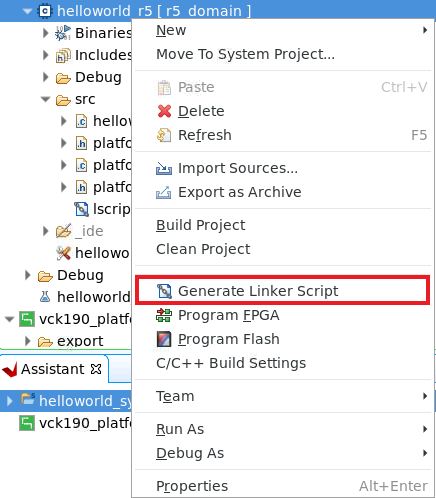
注記: [Generate linker script] ダイアログ ボックスでは、左側は [Modify project build settings as follows] フィールドの出力スクリプト名とプロジェクト ビルド設定以外は読み取り専用です。右側には、メモリの割り当て方法に [Basic] タブと [Advanced] タブの 2 つの選択肢があります。どちらも同じタスクを実行しますが、[Basic] タブの方が大まかで、すべてのデータ型をデータとして、すべての命令型をコードとして処理します。ほとんどのタスクはこれで達成できます。[Advanced] タブは、ソフトウェア ブロックをさまざまなタイプのメモリに正確に割り当てる場合に使用します。
[Basic] タブで、3 つのセクションすべてのドロップダウンメニューから psv_r5_0_atcm_MEM_0 を選択し、[Generate] をクリックします。
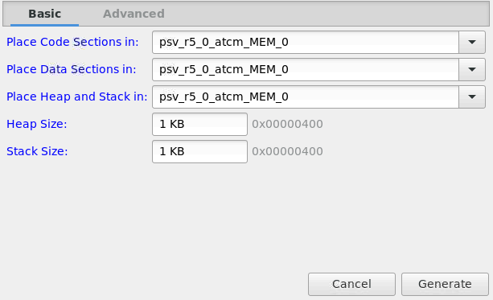
注記: 新しいリンカー スクリプト (
lscript.ld) がアプリケーション プロジェクト内の src フォルダーに生成されます。helloworld _system を右クリックして [Build Project] をクリックするか、 をクリックします。これにより、helloworld_r5 プロジェクトの Debug フォルダー内にプロジェクトの ELF ファイルが生成されます。
Vitis ソフトウェア プラットフォームでのシステム デバッガーを使用した JTAG モードでのアプリケーションの実行¶
アプリケーションを実行するには、アプリケーション実行の設定を保存する実行コンフィギュレーションを作成する必要があります。システム プロジェクト全体または独立したアプリケーションの実行コンフィギュレーションを作成できます。
システム プロジェクトの実行コンフィギュレーションの作成¶
[helloworld_system] システム プロジェクトを右クリックして [Run as] → [Run Configurations] をクリックします。[Run configuration] ダイアログ ボックスが開きます。
[System Project Debug] をダブルクリックして、実行コンフィギュレーションを作成します。
SystemDebugger_helloworld_system という名前の新しい実行コンフィギュレーションが作成されます。残りのオプションについては、次の表を参照してください。
表 6: コンフィギュレーションの作成、管理、実行の設定
| ウィザードのタブ | システム プロパティ | 設定または使用するコマンド |
|---|---|---|
| Main | Project | helloworld_system |
| Target → Hardware Server | 実行中のターゲット (ローカル) に接続します。まだ追加されていない場合は、[New] ボタンを使用して追加します。 |
[Run] をクリックします。
注記: 既存の起動コンフィギュレーションがある場合は、プロセスを終了するかどうかを確認するダイアログボックスが表示されます。[Yes] をクリックします。次のログがターミナルに表示されます。
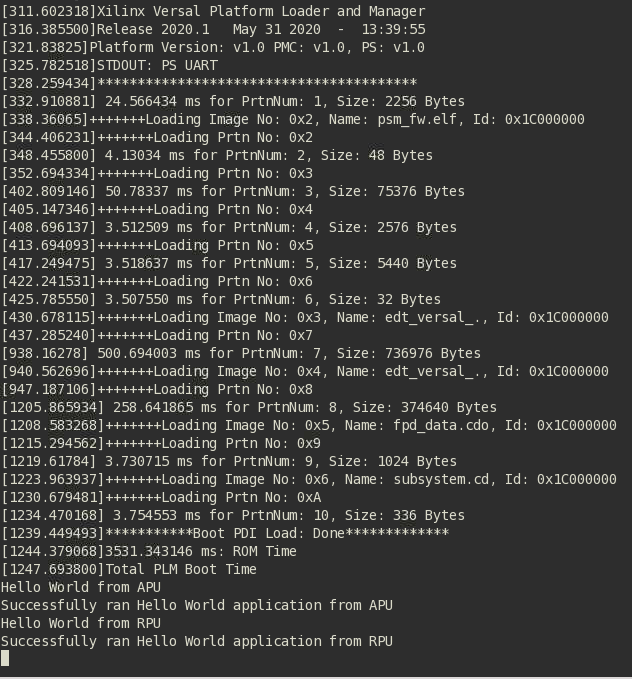
システム プロジェクト内の単一アプリケーションの実行コンフィギュレーションの作成¶
システム プロジェクト内の 1 つのアプリケーションの実行コンフィギュレーションを作成するには、次の 2 つの方法があります。
方法 I¶
[helloworld_system] システム プロジェクトを右クリックして [Run as] → [Run Configurations] をクリックします。[Run configuration] ダイアログ ボックスが開きます。
[System Project Debug] をダブルクリックして、実行コンフィギュレーションを作成します。
SystemDebugger_helloworld_system_1 という名前の新しい実行コンフィギュレーションが作成されます。この名前を SystemDebugger_helloworld_system_A72 に変更します。残りのオプションについては、次の表を参照してください。
表 7: コンフィギュレーションの作成、管理、実行の設定
| ウィザードのタブ | システム プロパティ | 設定または使用するコマンド |
|---|---|---|
| Main | Project | helloworld_system |
| Debug only selected applications | オン | |
| Selected Applications | [Edit] ボタンをクリックして、helloworld_a72 をオン | |
| Target → Hardware Server | 実行中のターゲット (ローカル) に接続。まだ追加されていない場合は、[New] ボタンを使用して追加します。 |
[Apply] をクリックします。
[Run] をクリックします。
注記: 既存の実行コンフィギュレーションがある場合は、プロセスを終了するかどうかを確認するダイアログボックスが表示されます。[Yes] をクリックします。次のログがターミナルに表示されます。
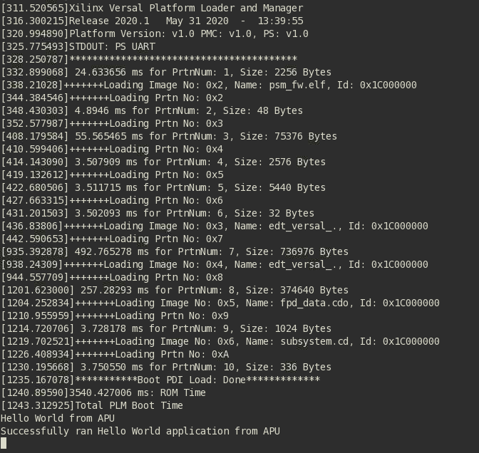
注記: APU と RPU どちらのアプリケーションも UART0 を使用しているので、同じコンソールに表示されます。アプリケーション ソフトウェアが APU と RPU 両方の Hello World 文字列を PS セクションの UART0 ペリフェラルに送信します。UART0 からホスト マシンで動作しているシリアル端末アプリケーションへ、hello world 文字列がバイトごとに送信され、文字列として表示されます。
方法 II¶
[hello_world_r5] アプリケーション プロジェクトを右クリックして [Run as] → [Run Configurations] をクリックします。[Run configuration] ダイアログ ボックスが開きます。
[Single Project Debug] をダブルクリックして、実行コンフィギュレーションを作成します。
Debugger_helloworld_r5-Default という名前の新しい実行コンフィギュレーションが作成されます。残りのオプションについては、次の表を参照してください。
表 8: コンフィギュレーションの作成、管理、実行の設定
| ウィザードのタブ | システム プロパティ | 設定または使用するコマンド |
|---|---|---|
| Main | Debug Type | Standalone Application Debug |
| Connection | ボードに接続します。既に接続されている場合は、ここで接続を選択。 | |
| Project | helloworld_r5 | |
| Configuration | Debug |
[Apply] をクリックします。
[Run] をクリックします。
注記: 既存の実行コンフィギュレーションがある場合は、プロセスを終了するかどうかを確認するダイアログボックスが表示されます。[Yes] をクリックします。次のログがターミナルに表示されます。
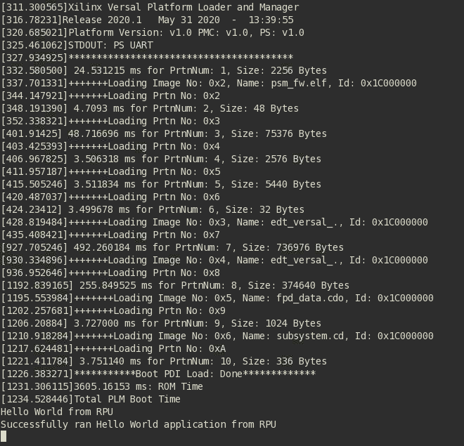
NoC (および DDR) IP コアの設定¶
このセクションでは、この章の前半で設定した CIPS と一緒に使用のに必要な NoC (および DDR) 設定と関連する接続について説明します。Versal ACAP CIPS IP コアを使用すると、2 つのスーパー スカラー、マルチコア Arm Cortex-A72 ベースの APU、 2 つの Arm Cortex-R5F RPU、プラットフォーム管理コントローラー (PMC)、および CCIX PCIe® モジュール (CPM) を設定できます。NoC IP コアを使用すると、NoC を設定し、DDR メモリ コントローラーをイネーブルにできます。
既存のプロジェクトでの NoC IP コアの設定¶
この例では、「サンプル プロジェクト: Versal ACAP を使用した新規エンベデッド プロジェクトの作成」に示すように、Vivado Design Suite を起動し、基本的な CIPS を設定済みのプロジェクトを使用します。
デザインのコンフィギュレーション¶
デザインをコンフィギュレーションする手順は、次のとおりです。
「サンプル プロジェクト: Versal ACAP を使用した新規エンベデッド プロジェクトの作成」で作成したデザイン (
edt_versal.xpr) を開きます。ブロック デザイン
edt_versal.bdを開きます。Vivado Design Suite の [Tcl Console] ウィンドウに移動し、次のコマンドを入力します。
apply_bd_automation-rulexilinx.com:bd_rule:versal_cips-config{apply_board_preset{0}configure_noc{AddnewAXINoC}num_ddr{1}pcie0_lane_width{None}pcie0_mode{None}pcie0_port_type{EndpointDevice}pcie1_lane_width{None}pcie1_mode{None}pcie1_port_type{EndpointDevice}pl_clocks{None}pl_resets{None}}[get_bd_cellsversal_cips_0]
Enter キーを押します。
AXI NoC IP を開きます。
[Boards] タブを次の図のように入力して設定したら、[OK] をクリックします。
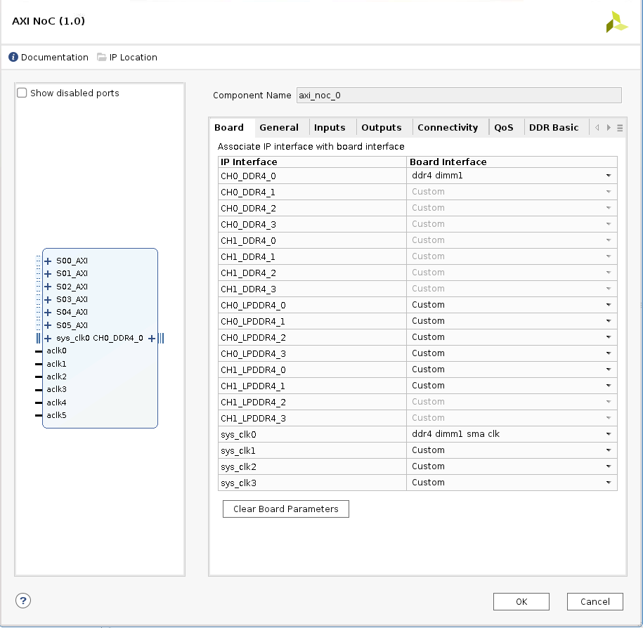
デザインの sys_clk_0_0 ピンをクリックします。
[External Interface Properties] ウィンドウで [Properties] → [CONFIG] → [FREQ_HZ] をクリックし、周波数を 200 MHz に変更します。
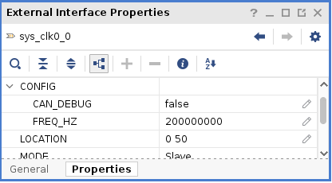
これにより、 DDR アクセス用の AXI NoC IP が追加されます。
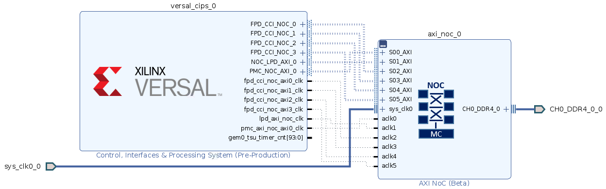
デザインの検証および出力の生成¶
デザインを検証して出力を生成するには、次の手順を実行します。
[Diagram] ウィンドウの空白部分を右クリックして、[Validate Design] をクリックします。または、F6 キーを押します。次のメッセージを示すダイアログ ボックスが開きます。
[OK] をクリックしてメッセージを閉じます。
[Block Design] の [Sources] ウィンドウで、[Design Sources] の [edt_versal_wrapper] を展開します。
[edt_versal_i: edt_versal] (
edt_versal.bd) という最上位ブロックを右クリックし、[Generate Output Products] をクリックします。次に示す [Generate Output Products] ダイアログ ボックスが開きます。
注記: Windows マシンで Vivado Design Suite を実行している場合は、[Run Settings] の下にさまざまなオプションが表示されることがあります。その場合は、デフォルト設定で続行します。
[Generate] をクリックします。
この手順では、選択したソースに必要なすべての出力ファイルを作成します。たとえば、IP プロセッサ システムの制約を手動で作成する必要はありません。[Generate Output Products] を実行すると、Vivado ツールでプロセッサ サブシステム用の XDC ファイルが自動的に生成されます。
[Generate Output Products] の処理が完了したら、[OK] をクリックします。一番下のウィンドウの [Design Runs] ウィンドウをクリックして、OOC モジュールの実行/合成/インプリメンテーション run を確認します。
[Sources] ウィンドウで [IP Sources] ビューをクリックします。次の図に示すように、生成した出力ファイルが表示されます。
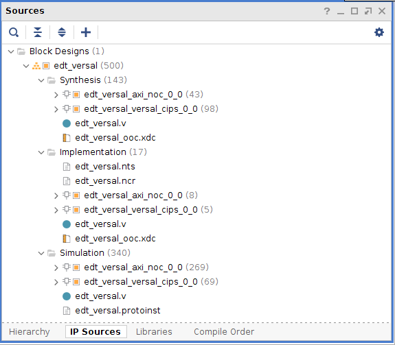
デバイス イメージの合成、インプリメント、生成¶
デザインのデバイス イメージを生成するには、次の手順を実行します。
Flow Navigator の [Program and Debug] をクリックし、[Generate Device Image] をクリックします。
[No Implementation Results Available] メニューが表示されます。[Yes] をクリックします。
[Launch Run] メニューが表示されます。[OK] をクリックします。
デバイス イメージの生成が完了すると、[Device Image Generation Completed] ダイアログ ボックスが開きます。
[Cancel] をクリックしてウィンドウを閉じます。
デバイス イメージを生成したら、ハードウェアをエクスポートし、[OK] をクリックします。
注記: 次の手順はオプションなので、省略して「ハードウェアのエクスポート」 セクションに進むこともできます。これらの手順を実行すると、デバイス イメージを生成する前に合成およびインプリメンテーションを実行するので、デバイス イメージ生成の詳細なフローがわかるようになります。デバイス イメージの生成フローを理解する必要がある場合は、次の手順を実行します。
Flow Navigator で [Synthesis] をクリックし、[Run Synthesis] をクリックします。
合成の開始前にプロジェクトを保存するようメッセージが表示された場合は、[Save] をクリックします。
合成の実行中、ウィンドウの右上にステータス バーが表示されます。このステータス バーは、デザイン プロセスをとおして、さまざまな理由により表示されます。ステータス バーは、プロセスがバックグラウンドで実行されていることを示します。合成が完了すると、[Synthesis Completed] ダイアログ ボックスが開きます。
[Run Implementation] をクリックして [OK] をクリックします。
インプリメンテーションが完了すると、[Implementation Completed] ダイアログ ボックスが開きます。
[Generate Device Image] をクリックして [OK] をクリックします。
デバイス イメージの生成が完了すると、[Device Image Generation Completed] ダイアログ ボックスが開きます。
[Cancel] をクリックしてウィンドウを閉じます。
デバイス イメージを生成したら、ハードウェアをエクスポートします。
ハードウェアのエクスポート¶
Vivado のメイン メニューから [File] → [Export] → [Export Hardware] をクリックします。[Export Hardware] ダイアログ ボックスが開きます。
[Include bitstream] を選択し、[Next] をクリックします。
エクスポートしたファイルの名前を入力し (またはデフォルトを使用し)、ディレクトリを選択します。[Next] をクリックします。
ハードウェア モジュールが既にエクスポートされている場合は、警告メッセージが表示されます。既存の XSA ファイルを上書きするかどうか尋ねるメッセージが表示されたら、[Yes] をクリックします。
[Finish] をクリックします。
DDR メモリでのベアメタル Hello World アプリケーションの実行¶
この例では、ザイリンクス Vitis ソフトウェア プラットフォームで、ボード設定を管理し、ケーブルを接続し、PC を介してボードへ接続し、DDR メモリの Arm Cortex-A72 および Arm Cortex-R5F から Hello World ソフトウェア アプリケーションを実行する方法を説明します。
新しい Vitis プロジェクトを作成します。これは、「ベアメタル Hello World アプリケーションの実行」と同様ですが、DDR メモリを参照するデフォルトのリンカースクリプトを使用する点が異なります。
「ベアメタル Hello World アプリケーションの実行」の手順 1 ～ 7 で説明されるように、ボード設定を管理し、ケーブルを接続し、システムを介してボードへ接続し、Vitis ソフトウェア プラットフォームを起動します。
注記: このためには、新しい Vitis ワークスペースを作成する必要があります。「ベアメタル Hello World アプリケーションの実行」で作成されたワークスペースは使用しないでください。
Arm Cortex-A72 で実行されるアプリケーションを使用してベアメタル Hello World システム プロジェクトを作成し、「OCM 上の Arm Cortex-A72 用の Hello World アプリケーションの作成」の手順 1 ～ 3 および 「helloworld_a72 アプリケーション ソース コードの変更」の手順 1 ～ 3 の説明に従ってソース コードを変更します。
helloworld_system を右クリックして [Build Project] をクリックするか、
をクリックして、アプリケーションプロジェクトの Debug フォルダー内にプロジェクトの ELF ファイルを生成します。「プラットフォーム プロジェクトへの新規 RPU ドメインの追加」で説明するように、プラットフォーム (手順 2 で作成) の RPU ドメインをさらに作成します。
既存のシステム プロジェクト (手順 2 で作成) 内の Arm Cortex-R5F 上で動作するベアメタル Hello World アプリケーションを作成し、「Arm Cortex-R5F のスタンドアロン アプリケーション プロジェクトの作成」の手順 1 ～ 3 および 「helloworld_r5 アプリケーションソースコードの変更」の手順 1 ～ 3 の説明に従ってソース コードを変更します。
helloworld_system を右クリックして [Build Project] をクリックするか、
をクリックして、アプリケーションプロジェクトの Debug フォルダー内にプロジェクトの ELF ファイルを生成します。
上記の Vitis ソフトウェア プラットフォームのシステム デバッガーを使用して JTAG モードで構築したアプリケーションの実行については、「Vitis ソフトウェア プラットフォームでのシステム デバッガーを使用した JTAG モードでのアプリケーションの実行」を、スタンドアロン アプリケーションのブート イメージを生成するには、「スタンドアロン アプリケーションのブート イメージの生成」を参照してください。
© Copyright 2020-2021 Xilinx, Inc.
Apache ライセンス、バージョン 2.0 (以下「ライセンス」) に基づいてライセンス付与されています。本ライセンスに準拠しないと、このファイルを使用することはできません。ライセンスのコピーは、http://www.apache.org/licenses/LICENSE-2.0 から入手できます。
適切な法律で要求されるか、書面で同意された場合を除き、本ライセンスに基づいて配布されるソフトウェアは、明示的または黙示的を問わず、いかなる種類の保証または条件もなく、「現状のまま」配布されます。ライセンスに基づく権限と制限を管理する特定の言語については、ライセンスを参照してください。